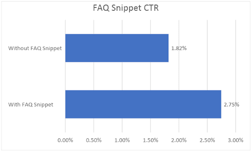
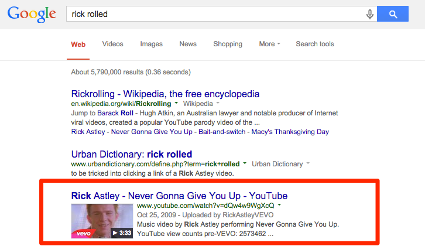

Зачем нужна микроразметка???
Давайте рассмотрим приемущества микроразметки:
- Микроразметка систематизирует контент для поисковиков.
- Микроразметка помогает адаптировать станицу под голосовой поиск.
- Микроразметка помогает сайту выделяться в выдаче.
- Микроразметка повышает привлекательность сниппета страницы в соцсетях.
- Микроразметка кратко передает содержание нужной страницы.
Статистика кликов с Rich Snippets 
Пример сниппетов на видео 